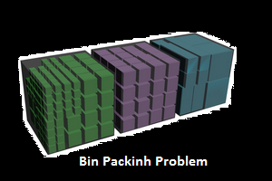

Coding, compiling, sharing... !
Dans cette section vous trouvez mes projets d'études et mes réalisations personnelles
J'espère que vous trouverez ce qui vous interesse
Vous trouverez ci-dessous, quel-ques projets open source sur lesquels j'ai travaillé tout au long de mon cursus universitaire ainsi que quelques réalisations personnelles :
-
Supply Chain
L'objectif de se projet était de trouver la résolution exacte d'un problème d'optimisation de Supply chain "Chaîne d'approvisionnement" par des méthodes d'énumération implicites. la solution a été réalisée par l'outils ILOG CPLEX.
-

Bin Packing Problem
Le problème consiste à ranger un ensemble d'articles de poids donnés dans des boîtes de capacité donnée en utilisant le plus petit nombre de boîtes possible. Il s'agit d'un problème NP-difficile, mais pour lequel il existe des techniques efficaces de solution approchée et exact.
-
SalleTP_ModelOpenGL
Dans le cadre du module INFOGRAPHIE suivi en "Master1" il nous a été demandé de réaliser un projet indivudiel qui consiste à modéliser en 3D une salle informatique de la faculté sciences et techniques de l'université du Havre.

-
Pac-Man
L'objectif de se projet était dans le cadre des algorithmes d'intelligence artificielle utilisés pour la rechrche de chemin « pathfinding » dans un graphe entre un noeud initial et un noeud final d'implémenter l'algorithme A* à travers le développement d'un jeu 2D « Pac-Man ».
-
Routage
Il s'agissait d'implémenter un programme JAVA permettant de donner le chemin le plus court dans une topologie réseau donnée. On imaginant que l'on dispose d'un réseau dans lequel se trouvent des machines et des commutateurs avec plusieurs interfaces réseaux.
-
Machine de Turing
Il s'agit d'un programme Java qui prend en entrée une Machine de Turing « M », ainsi que sa donnée « W » chaine de (bâtons) et de (#), puis simule le fonctionnement de « M » sur « W », avec affichage du résultat final.
-
SalleTP_ModelOpenGL
L'objectif de se projet était de trouver la résolution exacte d'un problème d'optimisation de Supply chain "Chaîne d'approvisionnement" par des méthodes d'énumération implicites. la solution a été réalisée par l'outils ILOG CPLEX.
-
TRANSMISSION BINAIRE
Implémenter en Java sous forme d’applet permettant de tracer le signal électrique émis lors de l’envoi d’une chaîne binaire d’un émetteur à un récepteur en fonction du code choisi parmi les techniques de codage suivantes : (NRZ, Manchester, Manchester Différentiel et Miller).
-
Labyrinth
L'objectif est de construire un labyrinthe 2D de taille variable « N x N », en suite de définir une entrée et une sortie du labyrinthe pour pouvoir le parcourir tout en construisant un chemin par suppression d'arretes entre l'entrée et la sortie en utilise un algorithme de parcours.